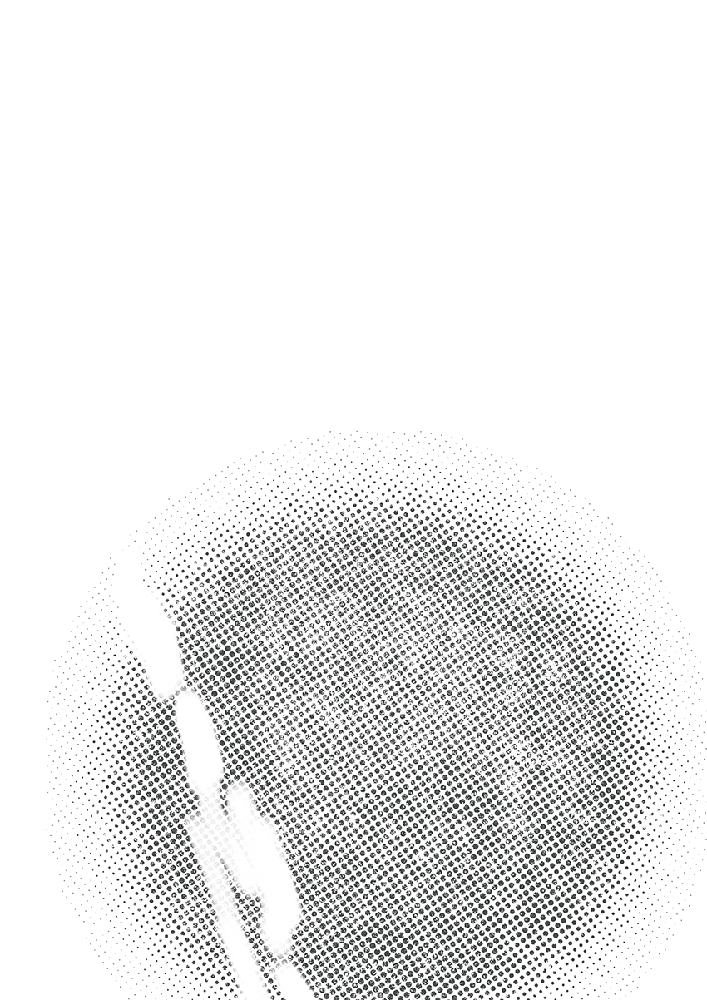
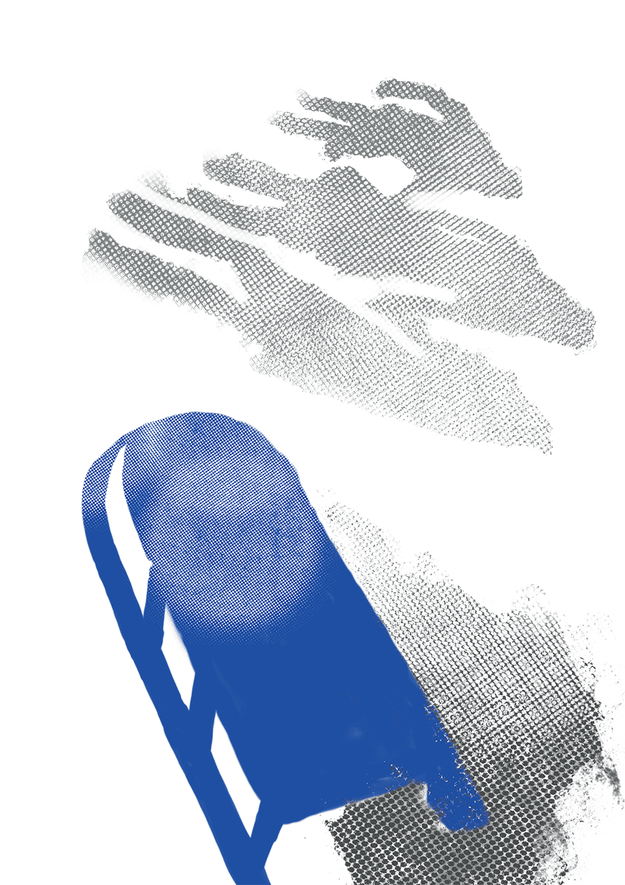
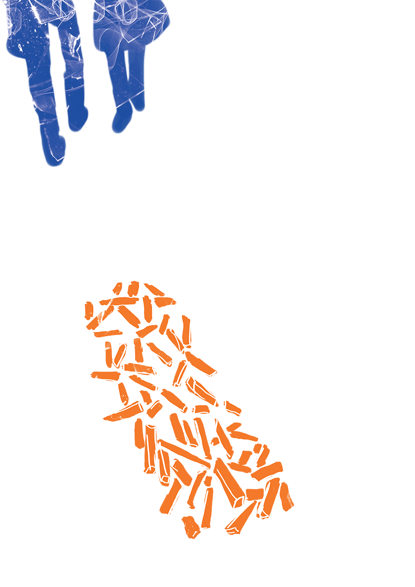
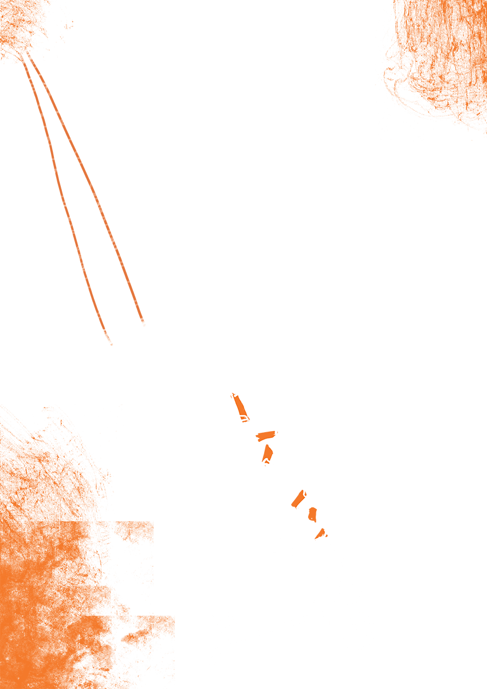
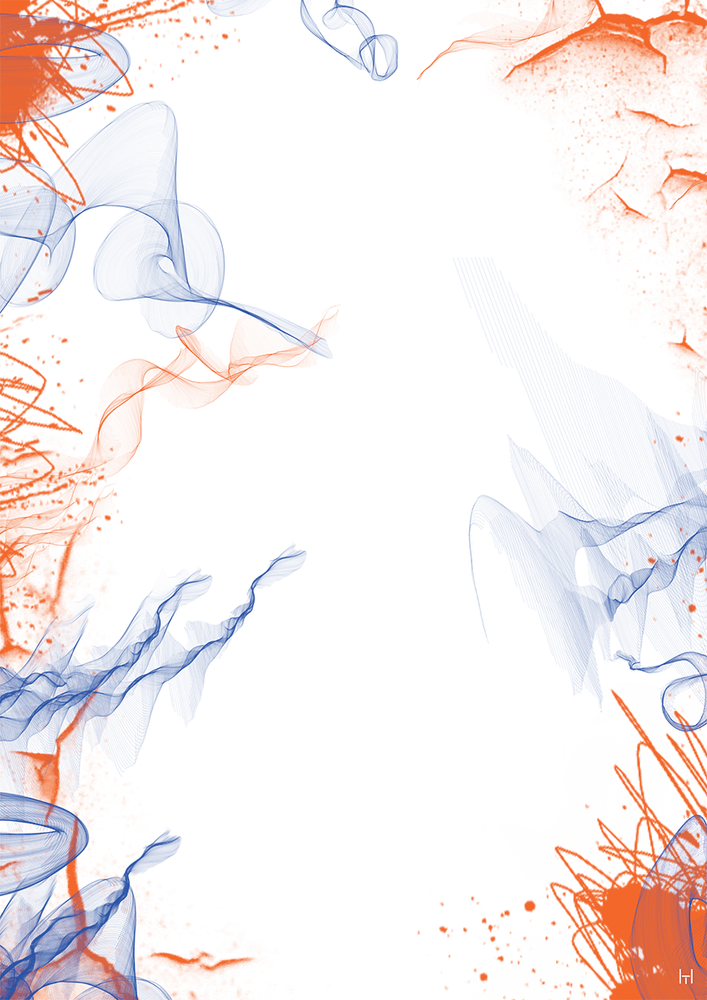

Білашенко (Кузьменко) Галина Олександрівна народилася в 1933 році в родині українських ромів у
невеличкому місті Кадієвка, на Луганщині. Окрім Галі в родині було ще двоє дітей – старший брат
та молодша сестра. Жили дружно і заможно. У містечку жила досить велика ромська громада – майже
всіх, включно із батьками Галини, вбили німці.
Аудіо текст
Галина Білашенко
Батьків побили, а ми удвох з братом лишилися.
А третя сестричка, найменша наша, – замерзла. Пішла хліба просить і замерзла. Ми на саночках уже
мертву привезли. Куди дівати? Мороз сорок градусів, положили у пристроєчку. А собаки набігли і
згризли. Отак…
Двері у хату були, а у веранді не було. Брат зняв, порубав та у плиту, спалив. Бо нічим топить
було.





Галина Білашенко
Найтяжче доводилось переносити лихоліття війни дітям, які не мали підтримки дорослих. Найрізноманітніші
життєві ситуації, в яких опинялись герої спогадів, ставали рубежем між світом дитинства і суворими
реаліями воєнного часу. Комусь пощастило прибитись до родичів, чи бодай сусідів, хтось залишився цілком
самотнім. Така доля спіткала Галину Білащенко. Вона народилася в 1933 році в родині українських ромів у
невеличкому місті Кадієвка, на Луганщині. Окрім Галі в родині було ще двоє дітей – старший брат та
молодша сестра. Жили дружно і заможньо. У містечку жила досить велика ромська громада – майже всіх,
включно із батьками Галини, вбили німці.
Дуже яскравою, але водночас емоційно складною у спогадах Галини є тема родинних стосунків, спогади про
сирітство та вимушене передчасне дорослішання, адже після загибелі батьків осиротілим дітям доводилося
дбати про себе самостійно. Галина Олександрівна згадувала:
«Згадаю було брат співає, я танцюю. Я співаю – брат танцює. І для німців теж співали і танцювали, а
німці нам давали їсти. А бувало, що німці сердиті були, то брата били, а мене ні. А брата били, що
окурки підбирав» [1].
В таких непростих умовах діти намагалися посильно допомагати нашій армії. Так, наша героїня згадувала як
разом зі старшим братом рятували сусіда-партизана:
«У місті були і партизани. У нас у хаті один жив. Я не знала, а брат Гришка знав. Це старої сусідки
хлопець. У плиті у духовці зробив діру. Знаєш духовку. Виколупав у плиті яму і там ховався. А брат
це знав і каже: «Галя, іди до старої, двір позамітаєш!». А там німці сигарети курили і окурки
кидали. І ми з дівчатками позмітаєм смітю, позбираємо, но не дай Бог піднімеш сигарету. Не давали,
дуже злились. Не хотіли, щоб після них брали. А ми позамітаємо, смітю позбираємо, а потом
перебираємо. Цьому партизану давав. А хто ж це знав?» [1].
Велика відповідальність лягала знову на старших братів і сестер. Але окрім війни у беззахисних сиріт
було багато інших ворогів: холод, від якого треба було придумати, як врятуватись; голод, який не було
кому й чим втамувати; небезпечними ставали навіть дворові собаки, з якими ще зовсім недавно вони
забавлялися.
Галина разом із братом та маленькою сестричкою ходили в найближчі села, аби випросити бодай якийсь харч.
З однієї такої вилазки вони повернулись лише удвох:
«Батьків побили, а ми удвох… А третя сестричка? Та я ж кажу тобі, замерзла. Пішла хліба просить і
замерзла. Ми на саночках уже мертву привезли... Куди дівати? – Мороз сорок градусів, положили у
пристроєчку. А собаки набігли і згризли. Отак… (показує руками)... А дверей … у веранді не було… –
Брат зняв, порубав та у плиту, спалив. Нічим топить було.» [1].